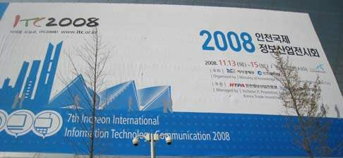

ecl news & announcements
Our laboratory participates in ITC Fair 2008 to be held at Songdo Convensia
ECL은 ITC2008 전시회에 참여합니다. 본 연구실에서 3D입체영상 과제의 일환으로 개발한 증강현실 콘텐츠 제공 시스템인 AR(Augmented Reality) Book을 출품합니다.
2008 인천국제정보산업전시회 실감형 3D분야 - 의료·영화… 전영역 3차원 접속
인천국제정보산업전시회에는 인천정보산업진흥원에서 수행하고 있는 '실감형 3D영상 원천기술 개발사업'에 참여하는 업체와 대학교 연구팀이 특별관을 개설해 실감형 3D와 관련된 기술을 선보인다. 이 사업은 IT분야의 실감형 3D영상원천기술 개발 및 상용화를 통해 지역의 산업 발전을 유도하기 위해 추진되고 있으며, 지역내 11개 업체와 인하대학교·인천대학교 등이 참여하고 있다...
인천대학교 박종승 교수 연구팀에서는 카메라로부터 실시간 획득되는 실사 비디오를 분석해 3D 이미지를 삽입하고, 비디오의 실감 향상을 지원하는 증강현실 시뮬레이션을 선보인다...
from 경인일보 2008.11.10
ITC2008 인천국제정보산업전시회
“미래를 오늘로!”를 주제로 제7회 “ITC2008 인천국제정보산업전시회”가 막을 올린다. 인천광역시와 정보통신부, 대한무역투자진흥공사(KOTRA)가 주최하고, 인천정보산업진흥원과 KOTRA인천무역관이 주관하는 이번 전시회는 오는 2008년 11월 12일부터 15일까지 4일간, 올해 10월 인천최초로 개관하는 인천국제컨벤션센터(송도 컨벤시아) 전시장에서 화려하게 개최되며, 이번 전시회는 해마다 성장을 거듭하고 있는 국내 유망 IT기업들의 모습을 유감없이 보여줄 예정이다. 인천지역 최대의 정보통신 전시회인 “ITC2008 전시회”는 최첨단 정보화 산업도시로 거듭나려는 인천의 현 주소를 함께 소개해 인천의 이미지를 상승시키고, IT산업과 국내외 비즈니스를 활성화시키기 위해 지역에서는 최초로 2002년 개최된 이후 올해로 7회째를 맞이하고 있다.
www.itc.or.kr

2008 인천국제정보산업전시회·이모저모 "실감나네" 3D입체영상 인기폭발
13일 막을 올린 제7회 'ITC2008 인천국제정보산업전시회'는 최첨단 정보통신(IT) 기술이 가져다 줄 미래상을 엿보기에 충분한 장이었다. 기업에게는 실질적인 매출을 올릴 수 있는 기회를, 일반 시민들에게는 말로만 들어보던 미래의 모습을 간접 체험해 볼 수 있는 자리였다...
실감형 3D영상 기술관은 이날 전시회장을 찾은 국내외 바이어 및 일반 관람객들의 폭발적인 호응으로 하루종일 분주한 모습. 3D 입체영상 기술의 선진국인 유럽 및 일본에 비해서는 아직 걸음마 단계라고는 하지만 보는 이들의 발걸음을 멈추기에 충분했다...
from 경인일보 2008.11.13.
ITC 2008, the Best Marketer of the Year
ITC 2008 fulfilled its role in reminding every participant that the purpose of the exhibition is acquiring new business contracts and customers. The distinctive difference between this particular event and any other information technology exhibition or conference held this year was that the show floor was crowded with attendees of all different age groups and countries...
from Korea IT times 2008-12-16.
Entertainment Computing Laboratory